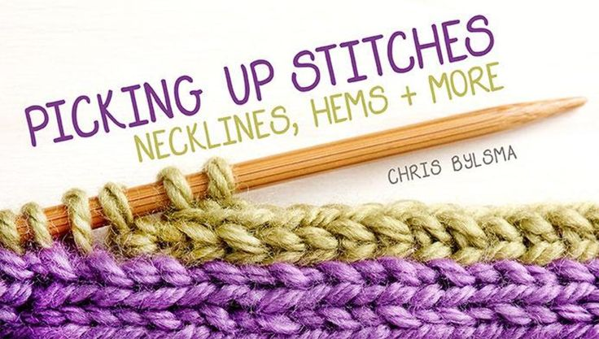

Picking Up Stitches: Necklines, Hems & More
Necklines And Hems
Picking up stitches is an essential knitting technique that allows you to seamlessly add details like necklines, hems, button bands, or decorative edges . This method is often used to create a polished finish, integrate new elements into existing pieces, or adapt your knitting to fit better. Whether you're working on a sweater neckline, creating a hem for a baby blanket, or attaching an edging to a shawl, picking up stitches ensures a clean and professional look.
The technique involves inserting your needle into the edge of a knitted fabric, looping the yarn through, and drawing up new stitches to work with. Mastering this skill not only enhances the versatility of your knitting but also allows you to create customized, well-finished projects that reflect your personal style and skill.
Featured Sulky Products:
- Knitting Needles
- Yarn
- Tapestry Needle
- Measuring Tape
- Stitch Markers
Step-by-Step For Picking Up Stitches:
1. Prepare the Edge: Identify the edge where you will pick up stitches (e.g., neckline, hem). Ensure the edge is clean and free of loose threads. Block your piece beforehand for a smooth and even surface.
2. Calculate Stitch Spacing: Determine how many stitches you need to pick up based on your pattern. Use a measuring tape to evenly space out the stitches. Generally, pick up stitches in a ratio like 3:4 or 2:3, depending on the fabric's gauge.
3. Insert the Needle: Starting at the edge, insert the needle into a stitch or gap. For a neat edge, go through both loops of the selvedge stitches or the bar between two stitches.
4. Loop the Yarn: Wrap the yarn around the needle (as you would when knitting), and pull it through to create a new stitch.
5. Continue Picking Up Stitches: Move evenly along the edge, inserting the needle, looping the yarn, and pulling through. Use stitch markers to segment the area and ensure consistency.
6. Work the Picked-Up Stitches: Once all stitches are on the needle, work the first row in your desired stitch pattern. Keep your tension even to avoid puckering or loose edges.
7. Finish the Edge: Depending on the project, continue knitting in the pattern until the desired length is achieved. Bind off loosely for flexibility, especially in areas like necklines or hems.

Share tips, start a discussion, or ask one of our experts or other students a question.